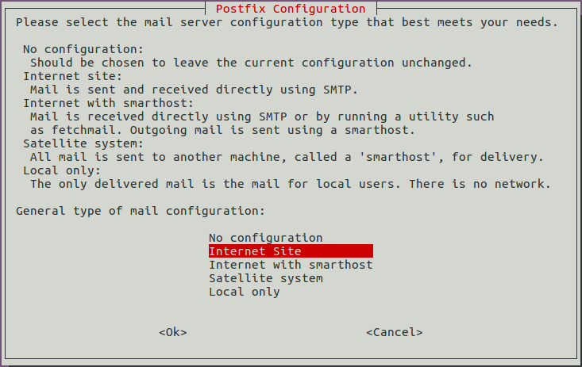
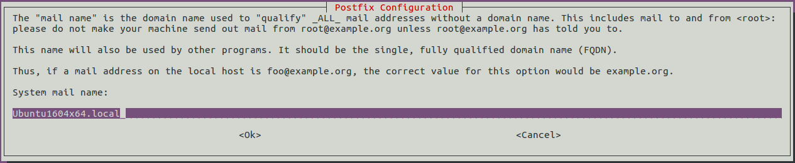

Пошаговая инструкция установки Postfix и Dovecot на Ubuntu
В этом руководстве будет рассмотрен процесс установки агентов работы с электронной почтой Postfix, Dovecot на виртуальные серверы под управлением операционной системы Ubuntu 16.04 x64.
Что это такое
Postfix - агент передачи электронной почты для обмена в сети Интернет и внутри локальной сети. Преимуществом Postfix является простота настройки и конфигурации. Может использоваться для отправки системных сообщений.
Dovecot - агент получения электронной почты по протоколам IMAP и POP3.
Установка Postfix
Прежде всего следует обновить локальную базу пакетов:
sudo apt-get update
Далее установите пакет postfix из главного репозитория:
sudo apt-get install postfix
После запуска пользовательского интерфейса в списке типов конфигурации сервера выберите «Internet Site» для автоматической генерации файла конфигурации main.cf.

В поле "System mail name" укажите полное доменное или локальное имя сервера, например: example.org.

Доменное имя сервера можно посмотреть с помощью утилиты nslookup:
nslookup
Настройка Postfix
Создайте файл virtual в директории /etc/postfix/ с помощью команды touch, в этом файле будут храниться почтовые адреса и имена пользователей, которым доставляется почта:
touch virtual
Создайте директорию private в /etc/postfix/ с помощью команды mkdir, в которой будут храниться файлы настройки yandex smtp:
sudo mkdir private
Создайте следующие файлы в директории /etc/postfix/private/ с помощью команды touch:
touch canonical sender_relay sasl_passwd
Услуги 1cloud
canonical – задает правила подмены адресов
sender_relay – задает связь доменов и конкретных отправителей к внешним службам
sasl_passwd – в этот файл вы добавляете внешние учетные данные почтового провайдера
Далее необходимо внести изменения в файл конфигурации main.cf
Откройте файл в текстовом редакторе в привилегированном режиме:
sudo nano /etc/postfix/main.cf
Записи имеют вид: параметр = значение1, значение2, значение3. Комментарии начинаются с символа #.
Измените значение параметра myhostname на ваше доменное имя, если доменного имени нет, то оставьте по умолчанию:
myhostname = example.org
Измените значение параметра mydestination, добавив значение вашего ip-адреса через запятую. Ip-адрес можно посмотреть с помощью следующей команды (параметр inet addr):
ifconfig | grep
"inet addr" -m 1
Чтобы письмо могло быть переслано на другие домены или адреса, замените параметр alias_maps параметром virtual_alias_maps.
Измените расположение хэша на /etc/postfix/virtual:
virtual_
alias_maps = hash:/etc/postfix/virtual
Значение параметра mynetworks, определяющего авторизованные сети:
mynetworks = 127.0.0.0/8 [::ffff:127.0.0.0]/104 [::1]/128
127.0.0.0/8 — безопасно: авторизовать только локальную машину
Для отправки почты с помощью Yandex SMTP добавьте в конец файла следующие строки:
smtp_sasl_auth_enable = yes
smtp_sasl_password_maps = hash:/etc/postfix/private/sasl_passwd
smtp_sasl_security_options = noanonymous
smtp_sasl_type = cyrus
smtp_sasl_mechanism_filter = login
smtp_sender_dependent_authentication = yes
sender_dependent_relayhost_maps = hash:/etc/postfix/private/sender_relay
sender_canonical_maps = hash:/etc/postfix/private/canonical
Описание параметров:
smtp_sasl_auth_enable – параметр отвечает, за включение поддержки sasl для проверки подлинности почтовых серверов
smtp_sasl_password_maps – указываем путь до файла sasl_passwd с внешними учетными данными
smtp_sasl_security_options – параметр безопасности
Возможные значения параметра:
smtp_sasl_type - тип плагина sasl, который должен использоваться для проверки подлинности, по умолчанию cyrus.
smtp_sasl_mechanism_filter список поддерживаемых методов аутентификации
smtp_sender_dependent_authentication – проверка подлинности будет зависеть от домена отправителя
sender_dependent_relayhost_maps - указываем путь до файла sender_relay
sender_canonical_maps - указываем путь до файла canonical
В файл /etc/postfix/private/canonical внесите изменения:
@yandex.ru user_name@yandex.ru
В файл /etc/postfix/private/sender_relay внесите изменения:
@yandex.ru smtp.yandex.ru
В файл /etc/postfix/private/sasl_passwd внесите изменения, где вместо *** укажите свой пароль:
[smtp.yandex.ru] user@yandex.ru:***
Для переадресации писем на другие почтовые адреса необходимо создать псевдонимы.
Откройте файл virtual в текстовом редакторе в привилегированном режиме:
sudo nano /etc/postfix/virtual
Укажите произвольные электронные адреса, которые необходимо создать, и имена существующих пользователей, которым нужно доставлять почту:
mail@example.org user1
mail2@example.org user1, user2
Для просмотра всех существующих пользователей системы выполните команду:
cut
-d: -f1 /etc/passwd
Преобразуем файл /etc/postfix/virtual в файлы директории /etc/postfix/private/ в справочные таблицы с помощью команды postmap: sudo postmap /etc/postfix/virtual sudo postmap /etc/postfix/private/*
После внесения изменений в конфигурационные файлы необходимо перезапустить сервис:
sudo /etc/init.d/postfix restart
На Ubuntu Server 16 с помощью команды iptables необходимо открыть порты для почтовых служб:
iptables -A INPUT -p tcp --dport 25 -j ACCEPT
Проверка почтового сервиса Postfix
Для более удобной работы с почтой установите утилиту mutt:
sudo apt-get install mutt
Для проверки корректности работы сервиса отправьте электронное письмо на любой почтовый ящик:
echo "First message" | mutt -s "msg" mail@example.com
Замечание: письма отправленные на почтовые адреса Google попадают в спам.
Получение писем с помощью Dovecot
Установите пакеты из главного репозитория:
sudo apt-get install dovecot-imapd dovecot-pop3d
В файл /etc/dovecot/dovecot.conf добавьте следующую строку с перечнем протоколов:
protocols = pop3 pop3s imap imaps
В файле /etc/dovecot/conf.d/10-mail.conf проверьте содержимое параметра
mail_location = mbox:~/mail:INBOX=/var/mail/%u
После внесения изменений в конфигурационные файлы необходимо перезапустить сервис:
sudo /etc/init.d/dovecot restart
Внесите изменения в файл /etc/hosts, добавив свое доменное имя:
ip-address example.com
Далее с помощью команды iptables необходимо открыть порты для почтовых служб:
iptables -A INPUT -p tcp --dport 220 -j ACCEPT
iptables -A INPUT -p tcp --dport 993 -j ACCEPT
iptables -A INPUT -p tcp --dport 110 -j ACCEPT
iptables -A INPUT -p tcp --dport 995 -j ACCEPT
Для проверки корректности работы сервиса отправьте электронное письмо с любого почтового ящика на созданный электронный адрес и проверьте с помощью утилиты mutt. Письмо должно быть отправлено только существующему пользователю и на адрес с указанием доменного имени, а не ip-адреса, в противном случае письмо получено не будет.